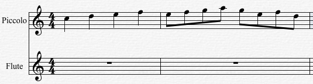
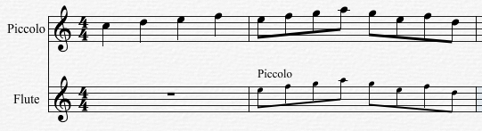

Choose this command to perform a paste copied data as cue notes. Overture's Paste as Cue command converts the notes, beams, etc. in to cue notes.
Note: The pasted cue notes will be muted.
The following example shows the use of the Paste as Cue command:
Assume you have the score below, and that you want to copy the notes from measures 2 on the Piccolo track as cue notes into measure #3 on the Flute track.

